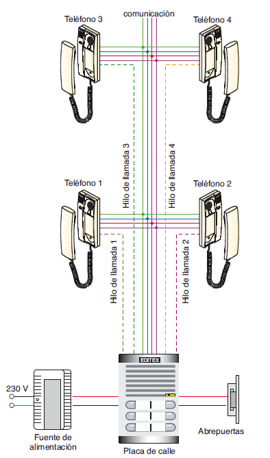

INTRODUCCIÓN
El sistema X+n hilos es el más utilizado en instalaciones clásicas de porteros automáticos. En él encontramos:
- Hilos comunes (X): compartidos para audio, micrófono, llamada y abrepuertas.
- Hilos particulares (n): uno por vivienda, utilizado como hilo de llamada.
- Alimentación: tensión suministrada desde el alimentador.
- Telefonillo interior: recibe los hilos comunes y su hilo particular.
- Placa de calle: punto desde el cual se originan los hilos particulares.
Este sistema permite el funcionamiento básico de audio y apertura de puerta mediante conexiones directas, fáciles de identificar y comprobar.
Durante esta sesión aprenderás a interpretar su esquema multifilar, identificar los hilos en el cable y realizar las primeras pruebas de continuidad y funcionamiento.
ESQUEMA MULTIFILAR X+n
En los sistemas de 4+n hilos, cada hilo tiene una función muy concreta. La forma de saber cuál es cuál depende de la codificación del fabricante (Tegui, Fermax, …)
Normalmente cada fabricante asigna números o letras a cada borne del telefonillo y de la placa.
Ejemplos típicos:
1 → Micrófono
2 → Auricular
3 → Masa / común
4 → Alimentación +
L → Hilo de llamada (uno por vivienda)
Hilo de micrófono (MIC): transmite tu voz hacia la placa de calle.
Hilo de altavoz (AUDIO): trae la voz de la persona que está fuera.
Masa / común: referencia compartida entre todos los circuitos.
Alimentación (+): proporciona tensión a la placa y al telefonillo.
Hilo de llamada (L): hilo individual que hace sonar SOLO tu telefonillo.

VIDEO DE APOYO
ACTIVIDAD
Realiza un dibujo sencillo del sistema X+n, que incluya:
- Alimentador
- Placa de calle
- Telefonillo interior
- Hilos comunes
- Hilo de llamada
Añade una breve explicación de la función de cada hilo
Realiza una foto o captura de tu esquema.
Sube tu trabajo a Teams en el apartado correspondiente: Esquema multifilar
EVALUACIÓN
| Ítem a evaluar | Sí | No |
| Dibuja correctamente el esquema X+n hilos | ☐ | ☐ |
| Identifica hilos comunes y hilo de llamada | ☐ | ☐ |
| Explica la función de cada hilo | ☐ | ☐ |
| Presenta un esquema claro y legible | ☐ | ☐ |
| Entrega dentro del plazo establecido | ☐ | ☐ |